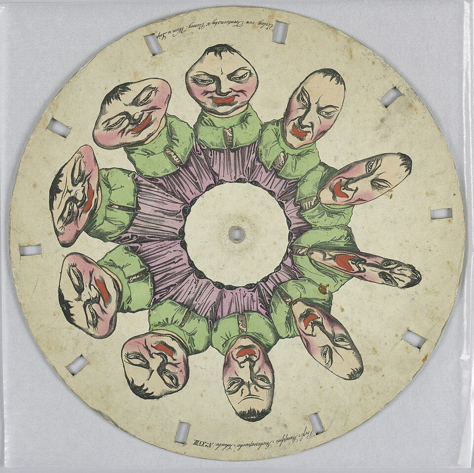
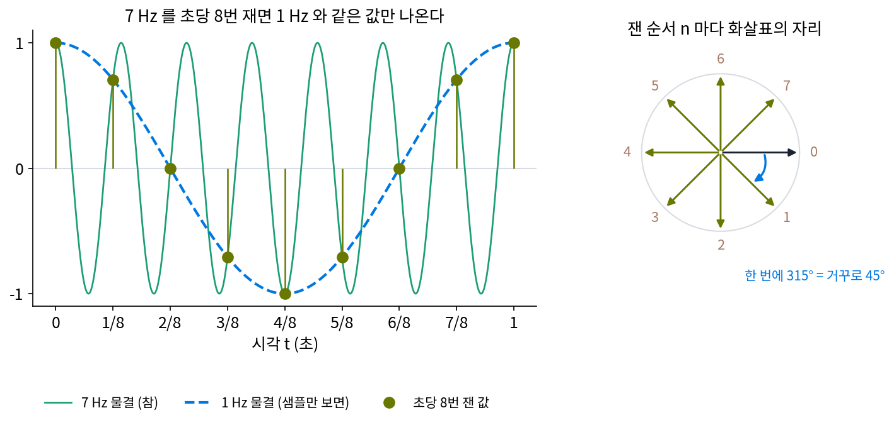
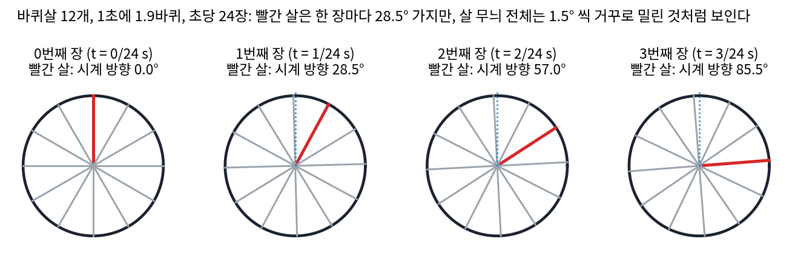
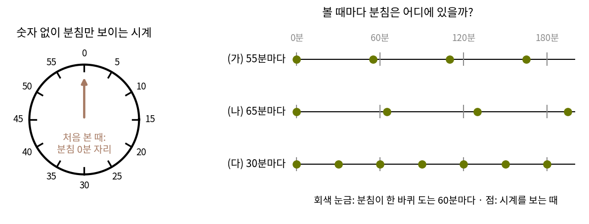
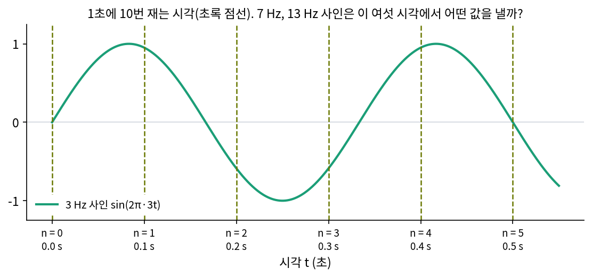
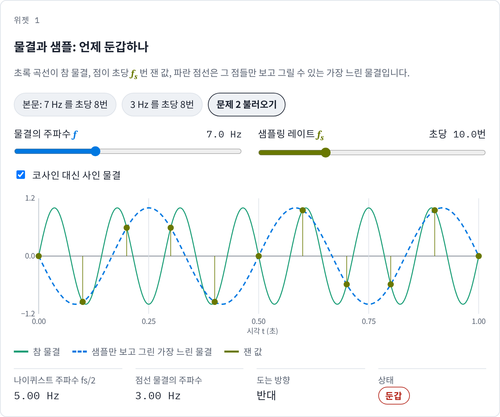
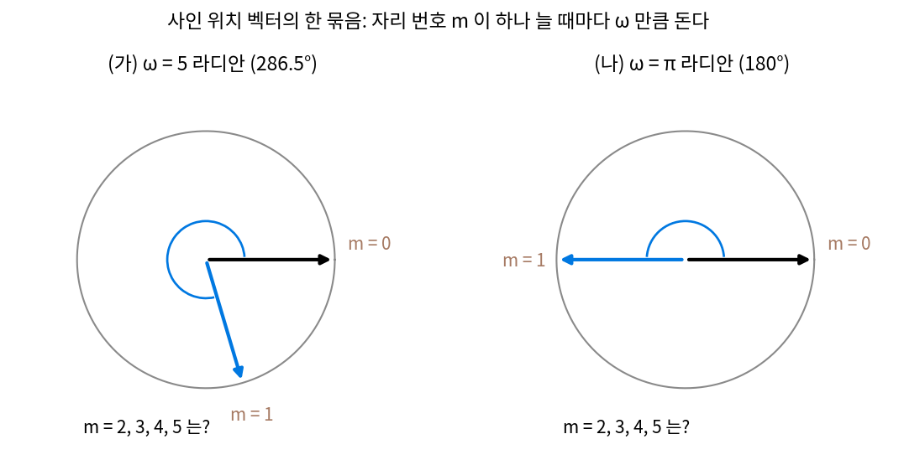

샘플링: 칸 간격과 에일리어싱
이 장의 물음
옛 서부 영화에서 마차가 달려 나가는데 바퀴는 거꾸로 돌거나 멈춘 듯 보이는 장면이 있다. 휴대폰으로 컴퓨터 모니터를 찍으면 화면에 없던 물결 띠가 사진에 번지고, 가는 줄무늬 셔츠를 입은 사람이 화면에 나오면 셔츠가 아른거린다. 셋 다 눈앞에 있는 것을 띄엄띄엄 재서 생긴 일로, 영화는 1초를 여러 장으로 끊고 카메라 센서는 화면을 낱칸으로 나눈다.
칸으로 적은 신호를 물결로 나누는 계산(이산 푸리에 변환)은 칸 N개를 물결 N개로 바꾼다. 그런데 칸과 칸 사이에서 신호가 무엇을 했는지는 칸만 보아서는 모른다. 점 8개로 그린 네모를 도는 화살표로 다시 그릴 때도, 주파수 5인 화살표와 주파수 −3인 화살표는 그 8점에서 같은 자리를 지났다.
ML에서도 띄엄띄엄 재서 생기는 착각이 나온다. 합성곱 신경망에 사진을 넣고, 같은 사진을 한 픽셀만 옆으로 밀어 다시 넣으면 분류 점수가 눈에 띄게 바뀌는 경우가 있다. 그림을 그리는 생성 모델이 얼굴을 돌리는 영상을 만들 때 수염과 머리카락 무늬가 얼굴을 따라가지 않고 화면에 붙어 있는 것처럼 보이기도 한다.
이 장은 다음 물음에 차례로 답한다.
- 띄엄띄엄 재면 빠른 물결은 왜 느린 물결로 보일까? 얼마나 느린 물결로 보일지 미리 셀 수 있을까?
- 얼마나 촘촘히 재야 칸 사이의 신호까지 되살릴 수 있을까? 되살릴 때는 칸 사이를 무엇으로 메울까?
- 세상의 신호에는 늘 빠른 물결이 섞여 있다. 재고 나서 고칠 수 있을까, 재기 전에 해야 할까?
- 사진처럼 가로·세로 칸으로 잴 때는 무엇이 달라질까?
에일리어싱: 빠른 물결이 느린 물결로 둔갑한다
1초에 7번 출렁이는 물결이 있다고 하자. 이 물결을 1초에 8번씩, 1/8초마다 한 번 재서 숫자 9개를 얻었다. 숫자만 받은 사람이 그 점들을 이어 보면 1초에 한 번 천천히 오르내리는 물결이 나온다. 7번 출렁이던 물결이 어디로 갔을까? 그리고 받은 사람은 그것이 원래 1초에 한 번 출렁이던 물결이 아니라는 것을 알아낼 수 있을까?
역사: 바퀴 착시에서 움직이는 그림으로
돌아가는 바퀴가 띄엄띄엄 보이면 이상하게 움직인다는 것은 영화보다 먼저 알려졌다. 1824년 영국의 의사 로제(Peter Mark Roget)는 세로로 늘어선 가는 창살 사이로 굴러가는 바퀴를 볼 때 바퀴살이 이상한 모양으로 보이는 착시를 풀이한 글을 썼다. 벨기에의 플라토(Joseph Plateau)는 대학생 시절 반대 방향으로 빠르게 도는 두 톱니바퀴를 겹쳐 보면 바퀴가 멈춰 선 것처럼 보이는 착시를 보고 1828년에 글로 냈다. 1830년 12월 패러데이(Michael Faraday)는 영국 왕립연구소에서 「특이한 종류의 시각 착각에 관하여」라는 발표로 도는 바퀴가 만드는 착시들을 다루었다.
착시를 풀이하던 사람들은 같은 원리를 뒤집어 썼다. 원판 둘레에 조금씩 다른 그림을 늘어놓고, 그림 사이마다 가는 구멍을 낸 뒤 원판을 돌리며 거울에 비친 그림을 구멍으로 들여다본다. 구멍이 눈앞을 지나는 순간에만 그림 한 장이 보이므로 눈은 그림을 띄엄띄엄 보는데, 그러면 멈춰 있는 그림들이 움직이는 것처럼 보인다. 1832년 말에서 1833년 초 사이에 플라토와 오스트리아의 스탐퍼(Simon Stampfer)가 거의 같은 때에 이런 원판을 내놓았다. 띄엄띄엄 보여 주는 방법이 그림을 움직이게 만들었고, 같은 방법이 바퀴를 거꾸로 돌게도 한다. 영화와 동영상은 이 원판의 후손이다.


바퀴가 거꾸로 도는 건 1초에 찍는 장 수와 바퀴가 1초에 도는 바퀴 수만 알면 바로 셈이 되잖아요. 그때는 왜 그게 수수께끼였어요?

1830년에는 1초에 몇 장씩 찍는 영화가 없었어요. 로제가 본 건 창살 사이로 굴러가는 바퀴였고, 플라토가 본 건 겹쳐 도는 두 톱니바퀴였죠. 그러면 무엇이 띄엄띄엄 재는 칸 노릇을 하는지부터 찾아야 했어요.

음, 로제 쪽은 창살이 칸이겠네요. 그런데 바퀴가 어느 순간에 어디 있었는지는 어떻게 확인했어요?

확인할 길이 없었어요. 한 순간을 붙잡아 둘 사진기도 아직 없었거든요. 다게르가 사진술을 세상에 알린 것이 1839년이에요. 눈에 남은 인상만 가지고 따져야 했어요.

아, 그럼 스탐퍼의 원판은 띄엄띄엄 보는 칸을 일부러 만든 거네요. 구멍 하나가 눈앞을 지나는 순간이 한 번 재는 순간이고요.

그러면 구멍이 지나는 사이에 그림이 얼마나 바뀌어야 거꾸로 가는 것처럼 보이는지도 미리 셀 수 있을까요? 바퀴로 치면 한 번 보고 다음에 볼 때까지 얼마나 돌아야 하는지요.
7 Hz 물결을 초당 8번 재면
물결이 1초에 출렁이는 횟수(주파수)는 Hz(헤르츠)로 적고, 물결을 도는 화살표로 보면 주파수는 화살표가 1초에 도는 바퀴 수와 같다. 7 Hz 물결 cos(2π·7t)를 1/8초마다 재 보자. 물결을 원 위를 도는 화살표의 가로 자리로 보면 손으로 셀 수 있다. 7 Hz 화살표는 1초에 7바퀴를 돌므로, 1/8초마다 7/8바퀴(315°)씩 돈다.
| 잰 순서 n | 0 | 1 | 2 | 3 | 4 | 5 | 6 | 7 | 8 |
|---|---|---|---|---|---|---|---|---|---|
| 시각 (초) | 0 | 1/8 | 2/8 | 3/8 | 4/8 | 5/8 | 6/8 | 7/8 | 1 |
| 7 Hz 화살표 각도 | 0° | 315° | 270° | 225° | 180° | 135° | 90° | 45° | 0° |
| 7 Hz 물결의 값 | 1 | 0.707 | 0 | −0.707 | −1 | −0.707 | 0 | 0.707 | 1 |
| 1 Hz 물결의 값 | 1 | 0.707 | 0 | −0.707 | −1 | −0.707 | 0 | 0.707 | 1 |
315°는 360°에서 45°가 모자란 각이어서, 한 바퀴를 거의 다 돌고 45° 덜 간 자리는 거꾸로 45° 돌아간 자리와 같다. 그러니 1/8초마다 보는 사람에게 7 Hz 화살표는 한 번에 45°씩 거꾸로 도는 화살표로 보이고, 45°씩 도는 것은 1초에 한 바퀴, 1 Hz다. 코사인은 화살표의 가로 자리라서 도는 방향을 가리지 않으므로, 아홉 값은 1 Hz 물결의 값과 하나도 다르지 않다. 둘을 가를 정보가 샘플에 아예 남지 않는다.

도는 각도에서 360°의 정수배를 덜어 내는 셈을 다른 주파수에도 할 수 있다. 1/8초마다 재면 화살표가 한 번에 도는 각도에서 360°의 정수배는 보이지 않는다. 9 Hz는 한 번에 405° = 360° + 45°를 돌아 1 Hz와 같고, 15 Hz는 675° = 720° − 45°로 거꾸로 1 Hz와 같다. 1초에 재는 횟수를 fs 라 하면, 물결의 주파수 f에서 fs의 정수배를 빼도 샘플 값은 하나도 바뀌지 않는다. 샘플만 보는 사람은 그 가운데 가장 느린 것을 보게 된다.
주파수 f인 물결을 fs의 간격으로 재서 fs의 정수배만큼 다른 느린 물결로 보이게 되는 일을 에일리어싱 (빠른 물결이 느린 물결로 둔갑 / aliasing)이라 한다. 영어 alias는 「다른 이름」이라는 뜻으로, 샘플 안에서 빠른 물결이 느린 물결의 이름을 달고 나타난다는 말이다. 둔갑하지 않고 제 이름으로 보이는 주파수는 −fs/2에서 fs/2 사이뿐이다. 샘플링 레이트의 절반인 fs/2를 나이퀴스트 주파수 (둔갑하지 않는 주파수의 위쪽 끝 / Nyquist frequency)라 부른다. 초당 8번 재면 나이퀴스트 주파수는 4 Hz다. 이름의 주인 나이퀴스트가 전신선 문제를 풀다 「두 배」라는 수에 닿은 이야기는 아래 역사에서 본다.
바퀴는 이 둔갑이 눈에 보이는 예다. 바퀴살 12개, 지름 1 m인 마차 바퀴가 1초에 1.9바퀴 돈다(시속 21.5 km, 설명을 위해 고른 바퀴다). 영화는 1초에 24장을 찍으므로, 한 장 사이에 바퀴는 360° × 1.9 / 24 = 28.5°를 돈다. 바퀴살 사이의 각은 30°라서, 다음 장에서 바퀴살은 거의 다음 바퀴살 자리까지 갔다가 1.5° 덜 간 곳에 있다. 바퀴살은 모두 같은 모양이라 눈은 어느 살이 어느 살인지 가리지 못하고, 가장 가까운 자리를 이어 「1.5° 거꾸로 갔다」고 읽는다. 바퀴살 무늬는 1초에 12 × 1.9 = 22.8번 제자리 모양으로 돌아오는 물결이고, 이 물결을 초당 24번 재면 22.8 − 24 = −1.2, 1초에 1.2번 거꾸로 도는 무늬로 보인다. 바퀴로 치면 1초에 0.1바퀴씩 거꾸로 돈다.

ML에서: 자리 번호도 띄엄띄엄 잰 것이다
트랜스포머에 자리를 알려 주는 사인 위치 벡터는 성분 둘을 한 묶음으로 삼아, 자리 번호 m에 따라 각도 mω만큼 돈 화살표의 가로·세로 자리를 넣는다. 자리 번호는 0, 1, 2, …의 정수뿐이므로, 이 화살표는 자리 하나마다 한 번씩 띄엄띄엄 재는 화살표다. 시간 대신 자리를 재는 칸이라는 점만 다르고, 위의 둔갑 셈이 그대로 통한다. 원래 논문(바스와니 외, 2017)의 가장 빠른 묶음은 자리 하나에 ω = 1라디안(약 57°)을 돈다. 이보다 훨씬 빠르게 돌리면 무슨 일이 생기는지는 아래 문제 3에서 따진다.
문제 1. 55분마다 보는 시계
벽시계의 분침은 60분에 한 바퀴 도는데, 수업 중이라 시계를 자주 못 보고 (가) 55분마다 한 번씩 본다. 볼 때마다 분침은 지난번보다 어느 쪽으로 몇 분만큼 가 있는 것처럼 보이는가? (나) 65분마다 보면? (다) 30분마다 보면? 분침이 도는 방향을 시계만 보고 알아내려면 적어도 몇 분보다 자주 보아야 하는가?

55분이면 분침이 55분 칸 앞으로 갔겠죠. 볼 때마다 55분씩 앞으로요.
민준 학생, 시계에는 몇 시인지 쓰여 있지 않고 분침만 있다고 해요. 12시 정각에 봤고 55분 뒤에 다시 봤어요. 분침은 어디에 있죠?
11자리, 55분 자리요. 아, 처음 본 12자리에서 보면 시계 반대 방향으로 5분 칸 물러선 자리네요. 분침만 보면 5분 거꾸로 간 것과 구별이 안 돼요. 330°를 갔는데 360°에서 30° 모자라니까요.
(나)는 65분이면 390°, 한 바퀴하고 30°라 5분 앞으로 간 것처럼 보여. 그런데 (다)가 이상해. 30분이면 180°라서 12자리에서 6자리로 가. 앞으로 반 바퀴인지 뒤로 반 바퀴인지 둘 다 같은 자리야.

그래요. 29분마다 보면요?
174°니까 앞으로 174°로 보여요.

31분이면?
186°라 뒤로 174°로 보여. 그럼 30분보다 자주 보면 늘 실제 방향이고, 30분이 경계네.
30분은 분침 한 바퀴 시간과 어떤 관계죠?

절반이요. 한 바퀴 시간의 절반보다 자주 보아야 해요.

조교님이 실험실 출석을 한 시간에 한 번만 확인하니까, 한 시간 동안 나갔다 온 친구는 계속 있었던 걸로 찍히던 거랑 같네요. 출석 확인이 분침을 보는 순간이고, 나갔다 온 한 시간이 분침의 한 바퀴예요.
문제 2. 사인 물결은 방향을 기억한다
1초에 10번 잰다. (가) 3 Hz, 7 Hz, 13 Hz 사인 물결 sin(2πft) 를 n = 0…5 에서 잰 값을 비교하라. (나) 7 Hz 와 13 Hz 는 각각 어떤 느린 물결과 샘플이 같은가? (다) 같은 셋이 코사인 물결이면 (나)의 답이 어떻게 달라지는가? (위젯 1의 「문제 2 불러오기」는 7 Hz 사인을 1초에 10번 잰다.)

셈해 봤어요. 3 Hz는 0, 0.951, −0.588, −0.588, 0.951, 0이고 13 Hz도 똑같아요. 7 Hz는 13에서 10을 빼면 3이니까 3 Hz랑 같겠죠. 7 − 10 = −3이긴 한데, 주파수에 음수는 의미가 없으니 3 Hz요.
7 Hz 샘플을 3 Hz 샘플 옆에 써 볼래요?

0, −0.951, 0.588, 0.588, −0.951, 0이에요. 부호가 다 반대인데요? 3 Hz와 같지 않아요.
부호만 다 뒤집혔으면… 네가 버린 −3이 뭔가 하는 것 같아.
−3 Hz 사인은 3 Hz 사인과 어떤 관계죠?

sin(−2π·3t) = −sin(2π·3t)요. 사인은 화살표의 세로 자리라서, 화살표가 거꾸로 돌면 세로 자리는 부호가 뒤집혀요. 7 Hz는 −3 Hz, 3 Hz로 거꾸로 도는 화살표로 둔갑한 거예요.
13 Hz는?
13 − 10 = 3이라 같은 방향 3 Hz야. 바퀴가 거꾸로 도는 것도 이 음수였네.
(다)는요?
코사인은 가로 자리라 cos(−θ) = cos θ예요. 7 Hz와 13 Hz가 둘 다 3 Hz 코사인과 샘플이 같아요. 방향이 코사인에서는 지워지고 사인에서는 부호로 남아요.

그럼 음수 주파수는 「거꾸로 돈다」는 뜻이 있는 거네요. 보고서에 절댓값만 적었다가 방향을 잃을 뻔했어요.
위젯 1에서 문제 2 설정을 불러와, 7 Hz 사인의 샘플과 파란 점선이 어느 쪽으로 출렁이는지 보세요.

문제 3. 자리 하나에 5라디안 도는 묶음
사인 위치 벡터의 한 묶음이 자리 하나에 ω 라디안 돈다. (가) ω = 5 이면, 정수 자리 m = 0, 1, …, 5 에서 이 화살표와 같은 자리를 지나는 더 느린 화살표는 무엇인가? (나) ω = π 이면 화살표의 가로·세로 자리는 자리마다 어떻게 되는가? (다) 원래 논문의 가장 빠른 묶음이 ω = 1 인 것을 둔갑의 말로 평가하라.

5라디안은 286.5°예요. 빠를수록 가까운 자리를 잘 가르니까, 1라디안보다 다섯 배 좋겠죠.
분침을 55분마다 보던 문제를 떠올려 봐요. 한 번에 286.5° 도는 화살표는 자리마다 어떻게 보이죠?
아, 문제 1(55분마다 보는 시계)의 330°처럼 이것도 360°에서 73.5° 모자라요. 5 − 2π = −1.283라디안이요.
그럼 거꾸로 1.283라디안씩 도는 화살표와 자리마다 각도를 비교해 볼래요?
자리 0부터 5까지 각도가 0°, 286.5°, 213.0°, 139.4°, 65.9°, 352.4°로 둘이 똑같아요. 결국 자리 하나에 1.283라디안 도는 묶음을 하나 더 둔 것과 같아요. 빨라 보여도 새로 생긴 건 없어요.
(나)는 π라디안이면 자리마다 반 바퀴라 각도가 0°, 180°, 0°, 180°…야. 가로 자리는 1, −1, 1, −1이고 세로 자리는 늘 0이야. 성분 둘 가운데 하나가 아무것도 안 담아. 문제 1에서 30분마다 본 시계처럼 방향도 못 가리고.

그래요. 정수 자리에서 쓸모 있는 ω는 −π와 π 사이뿐이에요. 자리 하나를 한 번 재는 칸으로 보면, π라디안이 자리 번호 칸의 나이퀴스트 주파수예요. 1라디안은요?
π보다 작으니까 둔갑하지 않아요. 가장 빠른 묶음을 π라디안 아래에 두고, 나머지는 거기서 느려지게 했으니 묶음마다 다른 정보를 담게 된 거네요.
문제 1의 시계와 같은 계산이었어요. 자리 번호가 시각이고, 자리 한 칸이 55분 간격이에요.